창기사 계열 통짜 시트 — 0회 준비
스펙 docs/specs/legacy-class-sheets.md · 창기사 · 용기병 · 할버디어 · 랜서 · 용황 · 전쟁군주 · 천마장군 · 2026-10-15
- 7종 기준 그림: 지금 게임의 대기 자세를 1도트 = 1px 로 찍어 칸(7종 모두 128 — 2026-10-16 창도 96 → 128)과 발 기준점에 맞췄다.
SHEET_ON에 7종 줄을 넣었다 (모두false— 시트가 승인되면 켠다). 주소?sheets=0이면 전부 꺼진다.- 동작 키 매핑: 스킬 자세의 무기 각도
wa→cast줄. 공용sheetFrame에cast.wrap(각도를 한 바퀴로 감싸 비교)을 더했다 — 할버드 대회전wa가 −6.5 ~ +7.8 로 돈다. - 시트 조립
dev/spear/build.py: 프레임 소스(지금은 기존 그림 자리표시, 나중엔 생성 결과)와 상관없이 같은 규격으로 시트·메타·몽타주·GIF 를 만든다. 칸 가장자리 닿음(잘림) 검사, hand(무기 끝)·head 점 자동.
◆ 도트 검수 합격 대표 4종 (2026-10-17) — 창기사 · 용기병 · 할버디어 · 랜서
- 직업별 3등신 도트 마네킹 가이드 + 컨셉 프롬프트 → ComfyUI (
dev/spear/design5.py). 1차(v4) 16장은 검수 합격 0 — 창 1~2px·어두운 한 톤·체형 가이드 약함. - 46칸 직접 축소본으로 형태(의도·읽힘·규칙) 순위 → 직업별 1장 (
qa/rank-*.json). - PixelLab image-to-pixelart 256→64 직업당 1회 + 창기사 재정리 1회 (로드맵 승인, 재시도 0) → 검사 세션 polish.
- 스크립트 수리 (
fix.py, 손 픽셀 수정 없음): 용기병 얼룩 정리·배 띠·노란 눈 / 할버디어 주황 서코트·어깨 넓히기 / 랜서 파랑 서코트·빨강 볏·방패. - 무기 바꾸기 (
pix.py wpnfix): 정리본에서 무기 직선을 찾아 지우고 코드로 그린 무기를 얹음 — 창·용창 3px, 할버드 3단 명암 반달 도끼날·갈고리·창끝, 끊김 없는 원뿔 랜스·둥근 보호대. - 검수:
dev/pixel-qa/qa.py --kind char→ 비평(critic.md). 목표 문장에 사용자 지적 4건(잡졸·장수풍뎅이·배불뚝이·가는 창)과 같은 계열 실루엣 겹침. 합격선: 전 항목 3+ · 평균 3.5.
| 직업 | 점수 의도/읽힘/깔끔/명암/도트/움직임/규칙 | 평균 | 판정 | 남은 흠 (비평, 선택 손질) | 검수 시트 |
|---|---|---|---|---|---|
| 창기사 | 3/4/3/3/3/5/4 | 3.57 | pass | 녹색이 깃발에만, 판금 하이라이트가 점처럼 | 보기 |
| 용기병 | 3/4/3/3/3/5/4 | 3.57 | pass | 3등신보다 길쭉, 창끝이 용 이빨로 덜 읽힘, 배 띠가 붕대처럼 | 보기 |
| 할버디어 | 3/4/3/3/3/5/4 | 3.57 | pass | 투구가 작아 4등신 쪽, 어깨 잡점, 서코트 작음 | 보기 |
| 랜서 | 4/4/3/3/3/5/4 | 3.71 | pass | 몸통·다리가 어둡게 뭉침, 볏이 가늚, 랜스 평면색 | 보기 |


같은 계열 실루엣 겹침(IoU, 발 맞춤): 창기사–할버디어 0.67 · 창기사–용기병 0.58 · 용기병–할버디어 0.56 · 랜서–나머지 0.40~0.44 (모두 0.8 미만).
▣ 새 디자인 시안 — 그림체 B(3등신) · 키 46px (2026-10-16, PixelLab 0회 · ComfyUI 20장)
sheets-sword.html ▣ 절.
- 만든 법 (검사 세션과 같음): 지금 그림의 머리는 두고 목 아래만 세로 1.5배 늘린 밑그림 → ComfyUI Z-Image + 픽셀 LoRA, denoise 0.82, 시드 11·23·37·51 → 1024 를 몸 키(투구 몸체 꼭대기 ~ 발, 깃털·뿔 제외) 46칸으로 줄임(칸마다 최빈색, 외곽선 #0b0d14). 도구
dev/spear/design.py. - 밑그림: 용기병·창기사는 확정된 실루엣 장식(날개꼴 망토·비늘 견갑 / 깃발)을 입힌 그림, 할버디어·랜서는 지금 게임 그림 (랜서는 2차에 원뿔 랜스·방패를 덧그린 그림).
- 프롬프트는 0절 디자인 브리프 그대로 (넓은 챙 철모 / 용 주둥이 투구·날개꼴 망토 / 버킷 투구·넓은 어깨·큰 도끼날 / 깃털 볏·카이트 방패·원뿔 랜스).
- 이건 디자인 고르기용 시안이다. 고르면 PixelLab 으로 기준 그림을 정리하고(계획서 따로), 그 그림의 관절에 맞춰 0-2절 동작을 만든다. 무기는 동작마다 덧그린다.
대표 그림 — 왼쪽 지금 게임 · 오른쪽 새 시안 (4배)
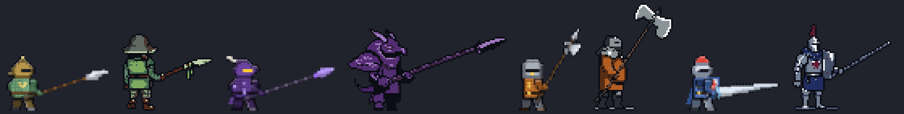
창기사 23 · 용기병 11 · 할버디어 51 · 랜서(2차) 23. 몸 키는 모두 46칸이고, 전체 높이는 장식·무기 때문에 48(창기사) · 51(용기병 뿔) · 67(할버디어 도끼) · 54(랜서 깃털) 이다.
위: 2배 (게임 화면 크기에 가깝다).
실루엣 구분 (같은 계열 1·2차)
- 창기사 = 넓은 챙 모자 + 창끝 깃발 · 용기병 = 뿔 달린 용 머리 + 등 뒤 날개 + 꼬리 · 할버디어 = 작은 버킷 투구·넓은 어깨 + 머리 위 큰 도끼날 · 랜서 = 높은 깃털 볏 + 큰 세로 방패.
- 3차(용황·전쟁군주·천마장군)는 2차가 정해지면 그 그림을 이어 더 화려하게 그린다 (0-1절 브리프).
후보 전부 (원본·46px)
창기사 — 밑그림 · 후보 4장 · 46px
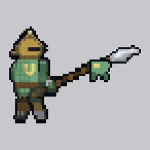
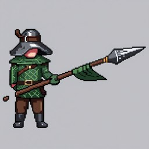
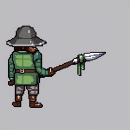
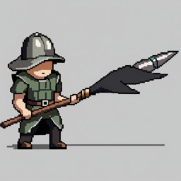
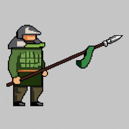
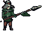
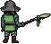
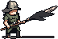
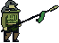
용기병 — 밑그림 · 후보 4장 · 46px
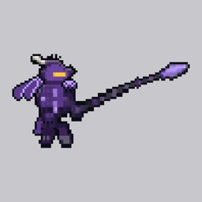
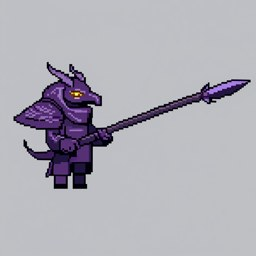
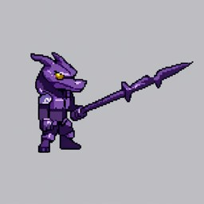
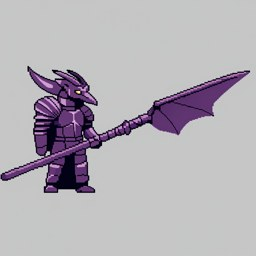
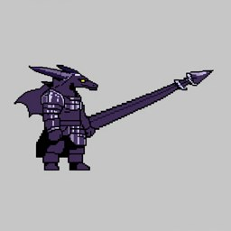
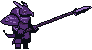
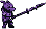
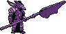
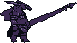
할버디어 — 밑그림 · 후보 4장 · 46px
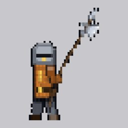
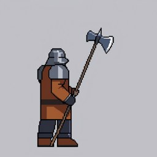
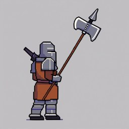
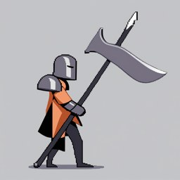
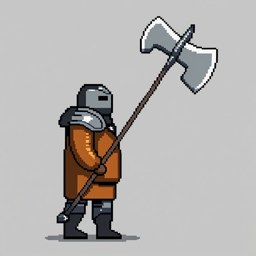
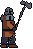
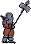
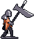
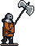
랜서 — 밑그림 · 후보 4장 · 46px
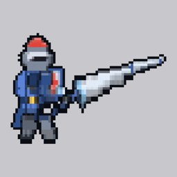
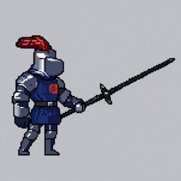
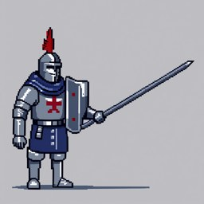
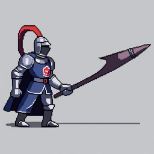
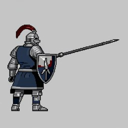
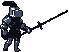
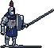
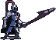
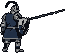
랜서 1차(지금 게임 그림 밑그림): 돌격창이 칼처럼 생겨 모델이 랜스를 못 그리고, 37·51 은 등신이 너무 높았다 → 2차는 원뿔 랜스·방패를 덧그린 그림을 밑그림으로 다시 뽑았다.
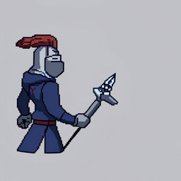
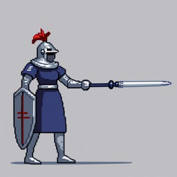
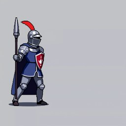
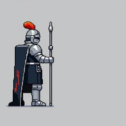
정할 것: ① 대표 4장 방향이 괜찮은지 (다른 시드로 바꿀 직업) ② 랜서 랜스가 가늘다 — 기준 그림 정리(PixelLab) 때 원뿔 랜스로 바로잡을지, ComfyUI 로 더 뽑을지.
0. 새 디자인 브리프 + 관절 설계 (2026-10-16 방향 전환 — 0회 준비)
0-1. 디자인 브리프 — 창 계열 7종
같은 계열 2차 셋은 틀부터 다르게(날개 망토 / 넓은 어깨 / 방패+랜스), 3차는 2차 특징을 이어 더 화려하게. 직업 색은 지금 게임의 look.fx·팔레트를 잇는다. 이미 정한 장식(깃발·날개꼴 망토·왕관/꼬리)은 그대로 넣는다.
| 직업 | 정체·직업 색 | 머리 | 몸·옷 | 무기·소품 | 실루엣 구분 포인트 |
|---|---|---|---|---|---|
| 창기사 (1차) | 성실한 견습 창병 · 녹색 #9fd49a + 황동 | 넓은 챙 철모(케틀햇), 턱끈 | 녹색 누빔 조끼 위 사슬, 가죽 허리띠, 장화 | 긴 나무 창 + 창날 뒤 제비꼬리 녹색 깃발(금 줄) | 넓은 챙 모자 + 창끝 깃발 |
| 용기병 (2차) | 용의 힘을 두른 기사 · 보라 #b388ff + 금 눈빛 | 용 머리형 투구(앞으로 뻗은 주둥이 바이저, 뒤로 휜 두 뿔) | 보라 판금, 앞 어깨 용비늘 견갑(솟음), 등 뒤 날개꼴 망토(박쥐 날개 막, 톱니 끝) | 용창: 날개 달린 창날, 자루에 비늘 감김, 보랏빛 | 등 뒤 큰 날개 삼각형 + 투구 주둥이 |
| 할버디어 (2차) | 성벽 지키는 중장 미늘창병 · 주황 #ff9f40 + 강철 | 버킷 투구(가로 눈 틈 하나), 장식 없음 | 아주 넓은 사각 어깨 판금, 주황 서코트(사선 줄), 땅딸막한 체형 | 할버드: 큰 도끼날 + 뒤 갈고리 + 위 창끝 | 넓은 사각 어깨 + 큰 도끼날 |
| 랜서 (2차) | 돌격 기병 · 파랑 #9fd8ff + 빨강 깃털 | 볏 투구 + 빨간 깃털 다발 | 파랑 서코트, 왼팔 카이트 방패(긴 연 모양, 빨강 문장) | 원뿔 돌격창(굵은 랜스, 손잡이 원반) | 큰 세로 방패 + 굵은 원뿔 랜스 |
| 용황 (3차 ← 용기병) | 용들의 왕 · 자홍 #ff4dd2 + 흑보라 + 금 | 용 투구 → 왕관 뿔 투구(금 뾰족 5개) | 날개 망토 → 두 겹 큰 날개 + 투구 뒤 큰 꼬리 장식(분홍 갈기, 허리 아래까지) | 용황창: 두 갈래 창날, 분홍 빛 무늬 | 머리 위 톱니 왕관 + 등 뒤 긴 꼬리 (용기병보다 위로 솟고 아래로 늘어짐) |
| 전쟁군주 (3차 ← 할버디어) | 전쟁 그 자체 · 주황불 #ff7a2a + 흑철 + 붉은 망토 | 버킷 투구 → 소뿔 철가면 투구(눈 틈에 불빛) | 어깨 판금 → 가시 박힌 거대 견갑, 찢어진 붉은 망토, 더 큰 체형 | 도끼창: 초승달 도끼날 둘, 날에 불빛 | 뿔 + 가시 견갑 + 망토 자락 (할버디어의 넓은 어깨를 잇되 더 거칠게) |
| 천마장군 (3차 ← 랜서) | 빛의 천마 군단장 · 흰·하늘 #cfe8ff + 금 | 깃털 → 양옆 흰 날개 투구 + 후광 | 흰 망토 + 금 견갑, 카이트 방패 → 금테 흰 대방패(별 문장) | 성창: 빛나는 금 원뿔 랜스 | 투구 날개 + 후광 + 큰 방패 (랜서의 방패·랜스를 잇고 위로 날개) |
0-2. 동작 관절 설계 (막대 인형) — dev/spear/skel.py
dev/sheets-sword/skel.py 와 같은 형식: 192칸, 발 (96, 176), 오른쪽을 봄, 관절 18개 이름·z_index 동일. 창은 두 손으로 쥔다(주황 = 앞팔·앞다리 = 창 앞손, 파랑 = 뒤). 노란 선 = 창(덧그리기 각도: 두 손 방향, 세워 들거나 등 뒤로 넘길 때는 직접 적음). 회색 = 기준 자세.
지금 리그를 베끼지 않고 크게 과장했다 — 웅크림 → 젖힘 → 크게 디딤 → 상체 숙여 끝까지 뻗기 → 회수. 출력 dev/spear/skel/<동작>.json (프레임별 keypoints·창 각도·첫 프레임 keypoints).
디자인이 정해지면 기준 그림에서 BASE 관절을 다시 읽어 맞춘다.| 동작 | 프레임 | 몸 움직임 (기준 자세에서 가장 멀리 간 칸, 192칸 기준) | 창 각도 | 쓰는 직업 |
|---|---|---|---|---|
| 대기 | 4 | 목 2 · 앞손 1 (숨쉬기) | −85 (세움) | 7종 |
| 걷기 | 8 | 목 2 · 앞발 18 (보폭 ±13, 무릎 들기, 뒷손 흔들기) | −91 ~ −80 | 7종 |
| 찌르기 | 8 | 목 18 · 앞손 32 · 앞발 19 | −17 ~ −3 | 창기사·용기병·용황·랜서·천마장군 (평타A) |
| 내리찍기 | 8 | 목 22 · 앞손 40 · 앞발 14 | −120 ~ +35 | 찌르기형 평타B |
| 휩쓸기 | 8 | 목 16 · 앞손 34 · 앞발 18 | 172 → −110 → +40 (등 뒤에서 머리 위를 돌아 앞으로) | 할버디어·전쟁군주 (평타A) |
| 내려찍기 | 8 | 목 23 · 앞손 43 · 앞발 16 | −165 ~ +55 | 휩쓸기형 평타B |
예상 PixelLab (계획서는 그림체 승인 뒤 다시 냄, 값 8f = 3): 2차 원형마다 동작 6 → 찌르기형·휩쓸기형 기준 그림 각 1장 × (대기·걷기·평타 2) — 직업마다 다시 뽑을지, 기준 몸 1~2개로 뽑고 입힐지는 검사 계열 시안 결과에 맞춘다.
1. 칸 크기와 발 기준점
| 직업 | 무기 (motion) | 칸 | 발 (x, y) | 지금 리그 최대 범위 (발 기준, 도트) | 잘림 |
|---|---|---|---|---|---|
| 창기사 | 창 (thrust) | 128×128 | (36, 112) | x −16 ~ +67 · y −51 ~ +9 | 없음 |
| 용기병 | 용창 (thrust) | 128×128 | (36, 112) | x −16 ~ +67 · y −59 ~ +9 | 없음 |
| 랜서 | 돌격창+방패 (thrust) | 128×128 | (36, 112) | x −16 ~ +63 · y −45 ~ +9 | 없음 |
| 용황 | 용황창 (thrust) | 128×128 | (36, 112) | x −16 ~ +67 · y −62 ~ +9 | 없음 |
| 천마장군 | 성창+방패 (thrust) | 128×128 | (36, 112) | x −16 ~ +67 · y −49 ~ +9 | 없음 |
| 할버디어 | 할버드 (sweep) | 128×128 | (56, 112) | x −45 ~ +61 · y −69 ~ +9 | 없음 |
| 전쟁군주 | 도끼창 (sweep) | 128×128 | (56, 112) | x −49 ~ +66 · y −73 ~ +9 | 없음 |
측정: 리그를 1도트 = 1px 로 그려 불투명 범위를 쟀다 — 대기 4·전투 대기 4·걷기 8·평타 2종 각 8·시전(무기 각도 9/8가지)·앉기 2. 창은 찌르는 쪽이 길어서 발을 왼쪽(36)에 두었다. 넘어짐(death)은 앞으로 쓰러지게 만들어 뒤가 잘리지 않는다. 창 시전의 아래 겨눔(wa ≥ 1.2, 용추락 내리꽂기)은 창끝이 땅 아래로 내려가 칸 아래 여백 16칸을 쓴다.
SHEET_ON 을 켜서 그렸을 때 불투명 범위(화면 px, 발 기준):
용기병 시트 x −13 ~ 34 · y −70 ~ 1 / 조립식 x −14 ~ 33 · y −71 ~ 1, 할버디어 시트 x −18 ~ 28 · y −69 ~ 1 / 조립식 x −18 ~ 28 · y −70 ~ 1 → 1px 안으로 같다 (차이는 숨쉬기 1칸).
스킬 시험장에서 두 직업의 스킬 4개 × 숙련 0~3단을 시트로 끝까지 돌려 예외 0.2. 기준 그림 (지금 게임 그대로, 칸·발 기준점에 맞춤)
순서: 창기사 · 용기병 · 랜서 · 할버디어 · 용황 · 천마장군 · 전쟁군주 (1차 → 2차 → 3차). 발을 같은 자리에 맞췄다. 흑백·실루엣은 같은 계열 구분 확인용이다.
3. 동작 키 매핑 (게임 상태 → 시트 줄)
| 줄 | 게임에서 언제 | 프레임 고르는 법 (src/sprites.js sheetFrame) | 만드는 법 (계획 — 승인 전) |
|---|---|---|---|
idle | 캠프·마을 서 있기 | fps 6 반복 | PixelLab 애니 (원형 공유) |
guard | 교전 중 평타 사이 | fps 8 반복 | 평타A 첫 프레임(창을 앞으로 겨눔) + 들썩임 1칸 — 생성 없음 |
walk | 원정 이동·결투 접근 | walkT × fps | PixelLab 애니 (찌르기형·휩쓸기형 원형 공유) |
atkA · atkB | 평타 (knight.combo 홀짝) | hit 프레임이 근접 타격 시점 35% 에 오게 | PixelLab 애니 — 찌르기 / 휘둘러 내리치기 |
cast | 스킬 자세 (pose.wa) | key: "wa", val 이 가장 가까운 프레임. 창 9장 −1.57 ~ +1.57, 할버드 8장 한 바퀴(wrap) | PixelLab 애니 한 번(무기를 위→앞→아래로 돌리기)에서 각도별로 고른다 |
hurt | 맞아서 밀림 (recoil > 0.35) | recoil 크기로 0/1 | 대기 1장을 뒤로 9°·4° 젖힘 (build.py) + 코드 흰 번쩍임 |
death | 체력 0 (down) | 한 번, 마지막 유지 | 대기 1장을 앞으로 12 → 90° 넘어뜨림 5장 (build.py) |
sit | 마을·캠프 앉기 | fps 2 반복 | 지금 게임 앉기 그대로 (생성 없음) |
| 스킬 | 쓰는 무기 각도 wa (재 봄) | 고르는 cast 프레임 |
|---|---|---|
| 창기사 관통 찌르기 · 랜서 기병 돌격 | −1.3 → 0 (앞으로 겨눔) | 1 → 4 |
| 용기병 용추락 | −1.57 (위) → +1.57 (내리꽂기) | 0 → 8 → 7 |
| 용기병 용의 숨결 | −1.3 → 0.08 | 1 → 4 |
| 랜서 방패 벽 | −1.57 고정 | 0 |
| 용황 용황 강림 · 천마장군 천마군단 | −1.65 ~ 0, 끝에 +1.1 | 0 ~ 4, 7 |
| 할버디어 대회전 | −6.5 ~ +7.8 (두 바퀴) | 0 ~ 6 (wrap) |
| 할버디어 대지 가르기 · 전쟁군주 천붕 | −3.05 (머리 뒤) → +1.1 (내리찍기) | 0 ~ 5 |
- 몸 이동·띄움·기울임(dx·lift·skew·sx·sy)은 지금처럼 시트 그림 전체에 변형으로 준다 (용추락 공중 lift, 대회전 facing 뒤집기 포함).
- 찌르기 이펙트 위치: 시트의
hand점 = 무기 끝(발보다 위에서 가장 앞 칸). 몽타주의 빨간 점. - 스킬 잔상
onlyWeapon은 시트에선 아무것도 안 그린다 (무기가 그림 안에 있음 — 파이터와 같음).
4. 동작별 프레임 몽타주 — 자리표시 (지금 게임 그림을 새 칸에 넣은 것)
생성 결과가 아니다. 칸 크기·발 기준점·잘림·cast 각도·파생 동작(hurt·death)을 확인하려고 지금 조립식 그림을 그대로 넣었다. 녹색 줄 = 발, 빨강 = hand, 파랑 = head, 칸에 닿으면 빨간 테두리.
움직임 (자리표시, 3배)
5. 원형 마네킹과 직업 입히기 (0회 시안, 2026-10-15)
dev/sheets-sword/ 의 부위 가르기·램프를 그대로 쓴다). 장식 없는 검사 몸에 창·할버드(둘 다 128칸)만 끼워 부위마다 다른 색으로 칠한 것이 원형 마네킹이다.
PixelLab 은 이 마네킹만 움직이고, 직업은 프레임마다 입힌다. 머리·후광·방패·망토는 직업 그림에서 옮기고, 몸은 직업 부위 램프로 칠한 뒤 팔레트를 고정한다.
도구 dev/spear/dress.py (캡처 spearParts). 아래 임시 자세(평타 15·30·45·70%)는 지금 리그로 만든 시험용이며 최종 시트에는 쓰지 않는다.원형 마네킹 — 왼쪽부터 전투 대기 · 대기 · 임시 자세 4

창 원형 (128칸, 발 36·112) — 창기사 · 용기병 · 랜서 · 용황 · 천마장군

할버드 원형 (128칸, 발 56·112) — 할버디어 · 전쟁군주
실루엣 바꾸기 — 창기사 · 용기병 · 용황 (사용자 결정 "생성 때 틀을 바꾼다")
왼쪽 셋 = 지금 그림, 오른쪽 셋 = 마네킹에 입히고 틀을 바꾼 시안 (손 도트, 직업 팔레트 색만 씀).
| 직업 | 바꾼 틀 | 실루엣에서 보이는 것 |
|---|---|---|
| 창기사 (1차) | 창날 바로 뒤에 매단 제비꼬리 삼각 깃발 (녹색 + 금 줄) | 창끝 아래 네모난 덩어리. 넓은 챙 뾰족 철모는 그대로 둔다 |
| 용기병 (2차) | 날개꼴 망토 (등 뒤로 솟은 박쥐 날개, 밝은 뼈대, 아래가 톱니) + 앞 어깨 용비늘 견갑 | 등 뒤 큰 삼각형, 어깨가 솟음 |
| 용황 (3차) | 투구 위 왕관(뾰족 5개, 금) + 투구 뒤에서 허리 아래까지 늘어진 큰 꼬리 장식(분홍 갈기, 끝이 갈라짐) | 머리 위 톱니, 머리 뒤 긴 꼬리. 용기병의 날개와 겹치지 않는 틀 |
dev/sheets-common/wpn.py 를 쓴다.
- 마네킹 프레임의 무기 칸으로 주축을 잡고, 장갑 가운데를 축에 내려 손 점을 구한다. 손에서 먼 쪽이 무기 끝이다.
- 직업 무기 그림(무기 색만 바꿔 찍은 캡처의 차이)을 RotSprite 식으로 돌려(8배 nearest 회전 → 칸 가운데 표본) 손 점에 얹는다.
- 지운 무기 자리는 주변 색으로 메우고, 장갑은 무기 위로 다시 그린다. 랜서·천마장군의 돌격창, 전쟁군주의 도끼창 모양이 돌아온다.
입히기 + 무기 덧그리기 — 임시 자세 4장 (왼쪽 4 = 마네킹, 오른쪽 4 = 입힌 결과)
랜서·천마장군·할버디어·전쟁군주 줄은 왼쪽 1장 = 지금 그림, 나머지 6장 = 전투 대기 · 대기 · 임시 자세 4를 입힌 것.
6. 생성 시트 결과 — PixelLab usage 11 (2026-10-16)
dev/spear/gen.py → build.py --src gen → src/sprites/<직업>.png/.json).
- 공용 대기 4f(usage 1)·걷기 8f(2), 찌르기형 평타A 찌르기·평타B 내리찍기 8f(각 2), 휩쓸기형 평타A 휩쓸기·평타B 내려찍기 8f(각 2).
- 대기 애니는 3·4번에서 창이 눕고 이펙트 그림이 섞여 1·2번만 왕복해 쓴다 (다시 뽑지 않음). 떨어진 이펙트·반짝이는 지웠다.
- 시전(cast) 줄은 평타 16장의 무기 각도를 재 각도순으로 골랐다: 창 6장(−1.78 ~ +0.16), 할버드 7장(−2.99 ~ +0.01, 한 바퀴 wrap).
- 무기 축은 RANSAC 직선으로 잡는다 — 생성 애니는 투구 밝은 회색도 무기 색으로 섞여 들어온다. 손 점은 몸통 가까운 장갑, 끝은 손에서 먼 쪽 (공용
wpn.py에line_fit·near_line추가). - 할버드 칸 발을 56 → 66 으로 옮겼다 (뒤로 젖힌 휩쓸기 −44). 7종 모두 잘림 없음.
- 몸 움직임 (덧그리기 전 마네킹, 무기 뺀 몸이 첫 프레임과 겹치는 정도): 찌르기 최저 0.11·머리 15칸 이동(크게 내디딤) · 걷기 발 벌어짐 7~20칸(다리 엇갈림) · 내리찍기 0.55 · 휩쓸기 0.55 · 내려찍기 0.7.
SHEET_ON은 false 유지 — 켤지는 사용자 확인 (검사 계열은 검수 미달로 다시 껐다). 해 보기: 아래 7절.
전후 나란히 움직임 (왼쪽 지금 · 오른쪽 시트)
줄 세우기 — 지금(위) · 시트(아래)
동작별 프레임 몽타주 (시트 그대로, 칸 테두리·발·hand·head)
몸 움직임 확인 — 덧그리기 전 마네킹 (로드맵 검수 요청)
dev/spear/motion.py.
- 찌르기: 몸이 실제로 움직인다 — 앞발 디딤으로 다리가 벌어지고(발 16 → 23칸) 팔이 뻗고 몸통이 앞으로 나간다 (몸 겹침 최저 0.11).
- 내리찍기 · 휩쓸기 · 내려찍기: 팔은 머리 위로 올라갔다 내려오지만 다리는 거의 그대로(발 15~17칸 고정)이고 몸통은 조금 기울 뿐이다 (겹침 0.55~0.74). 검사 계열 지적("몸은 그대로, 무기만 돈다")에 가까운 쪽.
- 걷기: 다리가 엇갈린다 (발 7~20칸) — 다만 보폭이 작다.
- 표의 머리 이동 18~25칸(휩쓸기·내려찍기)은 머리 위로 든 손을 머리로 잰 값이다. 실제 머리 이동은 2~4칸.
원형 마네킹 원본 (PixelLab 결과 그대로, 0번 = 넣은 첫 프레임)
| 수용 기준 | 결과 |
|---|---|
| 7종 시트로 그려지고 대기·걷기·평타 2종·시전·피격·사망·앉기가 움직인다 | ✅ 스킬 시험장 7종 스킬 10종 × 숙련 0~3 = 40회 시전 예외 0, 시전 중 cast 프레임이 각도 따라 바뀜 · 오프라인 원정 7종 각 20초 예외 0 · 앉기는 조립식(시트에 줄 없음)으로 예전과 픽셀 같음 |
| 어떤 동작에서도 무기 끝이 칸에서 잘리지 않는다 | ✅ build.py 잘림 검사 7종 모두 없음 (몽타주 빨간 테두리 0) |
| 전후 그림체가 이어지고 같은 계열 2·3차가 흑백 실루엣으로 구분된다 | 사용자 확인 — 실루엣 줄 (깃발 / 날개 망토 / 방패 / 할버드 / 왕관·꼬리 / 후광·방패 / 뿔 투구·도끼창) |
| 스킬 시전·궁극기·결투·레이드·마을 앉기가 깨지지 않는다 | ✅ 같은 drawHero 경로 — 시전 40회·원정 확인, 좌우 반전 대칭, 앉기 조립식 |
| SHEET_ON 을 끄면 예전으로 | ✅ 실행 중 SHEET_ON.x = false / 주소 ?sheets=0 |
| fps 가 떨어지지 않는다 | ✅ drawHero 1000번: 시트 3~12ms · 조립식 700~780ms |
| PixelLab 사용량 기록 | ✅ usage 11 (응답 usage 합, dev/spear/usage.md), ComfyUI 0장 |
7. 해 보는 법
- 주소로 켜서 보기 (
?sheetsOn=): 평타 (7종 켬) · 용기병 용추락 · 할버디어 대회전 · 천마장군 천마군단 · 전쟁군주 천붕 · 비교는 같은 주소에서&sheetsOn=을 뺀다. - 시트 켜고 보기: 스킬 시험장 콘솔에서
SHEET_ON.dragoon = true(7종 모두 같은 식). 오프라인 게임은index.html?server=http://127.0.0.1:9&sheetsOn=dragoon8초 뒤dev/spear/preset.js를 불러SHEET_ON.dragoon = true; spearPreset('dragoon', 2, 12). - 스킬 시험장(지금 그림): 용기병 용추락 · 할버디어 대회전 · 창기사 평타
- 임시 시트로 렌더러 연결을 다시 시험하려면 (커밋하지 않는다):
dev/skills.html콘솔에서spear/capture.js를 불러await spearCap('dragoon')(수신기python -I dev/spear/recv.py dev/spear/shots 8896) →python -I dev/spear/build.py dragoon --install→node dev/boxer/sheet-meta.js→ 새로고침 뒤SHEET_ON.dragoon = true. 끝나면git checkout src/sprites/meta.js하고src/sprites/dragoon.*를 지운다.
8. 정할 것
- 켤지 (로드맵 보류 중 — 방식 재검토): 7종
SHEET_ON을 켤지 (직업별로 정할 수 있다). 검사 계열은 "몸·팔이 거의 안 움직이고 칼만 돈다"로 미달이었다 — 창 계열은 찌르기에서 앞발 디딤·몸 숙임, 휩쓸기에서 허리 비틀기가 들어가 있지만 걷기는 다리 움직임이 작다. - 걷기 보강: 걷기가 약하면 걷기만 다시 뽑기 (usage 2) 또는 ComfyUI 사이 프레임.